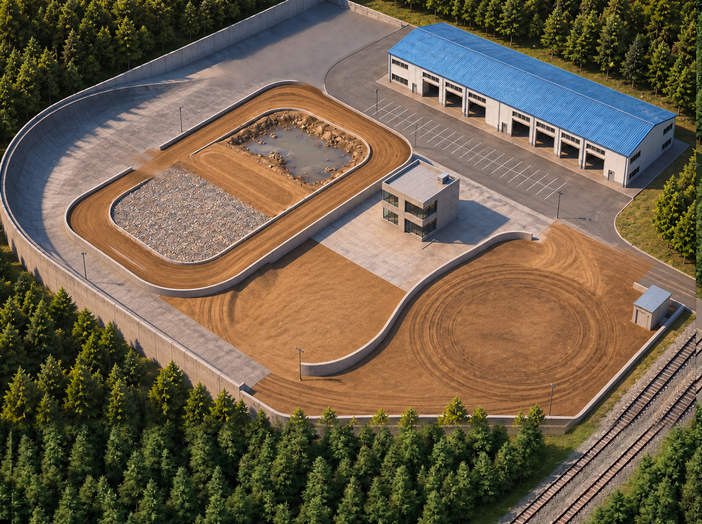

TrackVision
FIELD
FIELD TESTING GROUND
필드 시험장
주행 시뮬레이션 · 사진 기반
재생 속도
1×
전체 보기
장비 보기
장비
구역 이름
장비를 누르면 시험 정보와 주행 메뉴가 열립니다.
N
시험장을 준비하고 있습니다
Bobcat T-870 · Doosan DX-55 · Field Motion
3D 화면을 열 수 없습니다.
다시 시도